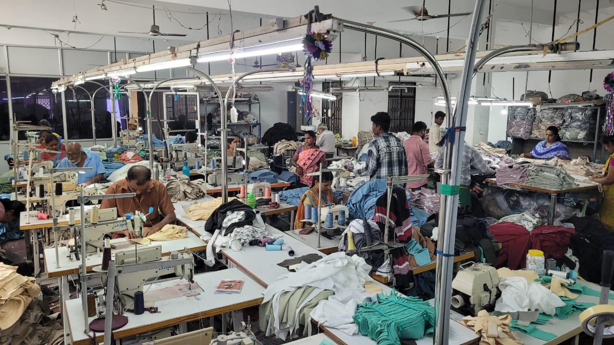

Manufacturing
Real photographs from our Tiruppur unit — production, stitching, quality checking, finishing and packing. No stock factory imagery.

Workflow
Process steps are shown as a general workflow. Specific capabilities are confirmed with your quotation.
Garment, quantity, sizes, colours and branding.
Fabric options and sample discussion.
Production run on the floor.
Batch checks, trims and finishing.
Folded, packed and dispatched.
Consistency
Bulk orders succeed on consistency. Our floor checks garments through production and again at finishing, before folding, labelling and packing for dispatch.
Send your specification and we will confirm feasibility, options and a quotation.